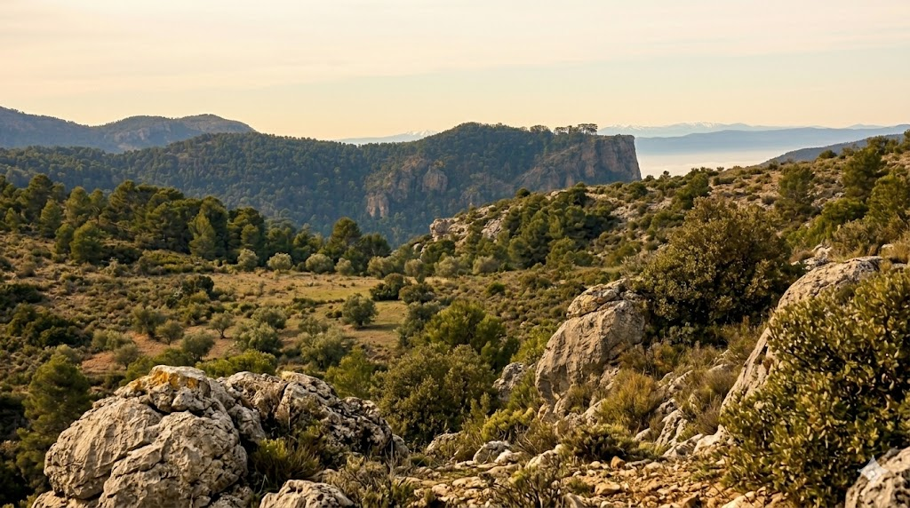

La Sierra de Cazorla es el parque natural más grande de España y el segundo de Europa. En este impresionante espacio natural nace el río Guadalquivir, el más largo de Andalucía. Se caracteriza por sus grandes montañas de roca caliza, extensos bosques de pinos y profundos valles que crean paisajes de gran belleza. Es famosa por su rica fauna, donde destacan especies como la cabra montés, los ciervos y el quebrantahuesos, una de las aves más singulares de Europa. Además, el parque alberga una gran diversidad de animales como jabalíes, zorros, águilas reales y buitres leonados. Este espacio está declarado Reserva de la Biosfera debido a su enorme riqueza de flora y fauna, con numerosas especies endémicas. Su vegetación incluye no solo pinares, sino también encinares, quejigares y zonas de ribera, lo que favorece una gran variedad de ecosistemas. La Sierra de Cazorla es también un lugar muy valorado por los amantes del senderismo y la naturaleza, con rutas emblemáticas como el nacimiento del Guadalquivir o la Cerrada de Elías. Sus paisajes, su biodiversidad y su importancia ecológica la convierten en uno de los espacios naturales más valiosos de España.
